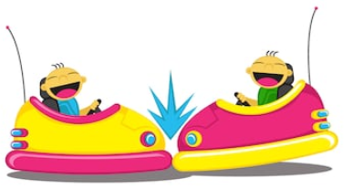
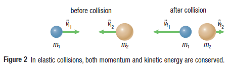
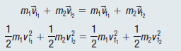
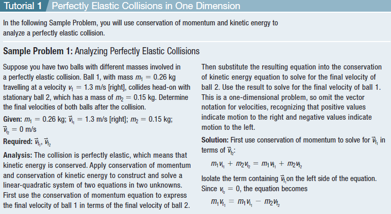
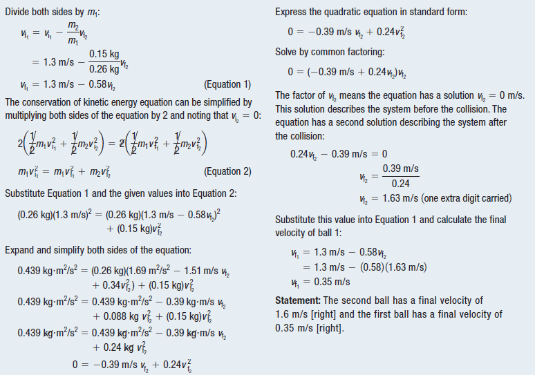

Collisions
What is a collision?
In physics, a collision is any event in which two or more bodies exert forces on each other in a relatively short time.
The scientific use of the term implies nothing about the magnitude of the force.

Elastic Collisions
Elastic collision: a collision in which momentum and kinetic energy are conserved
Conservation of kinetic energy: the total kinetic energy of two objects before a collision is equal to the total kinetic energy of the two objects after the collision

Inelastic Collisions
Inelastic Collision: a collision in which momentum is conserved, but kinetic energy is not conserved
In an elastic collision, both momentum and kinetic energy are conserved.
In an inelastic collision, momentum is conserved, but kinetic energy is not conserved.

Perfectly Elastic Collisions and Perfectly Inelastic Collisions
Perfectly elastic collision: an ideal collision in which external forces are minimized to the point where momentum and kinetic energy are perfectly conserved.
Perfectly inelastic collision: an ideal collision in which two objects stick together perfectly so they have the same final velocity; in this situation, momentum is perfectly conserved, but kinetic energy is not conserved.

Perfectly Elastic Collisions
In perfectly elastic collisions, both momentum and kinetic energy are conserved:



Practice
What happens to two objects after they collide in an elastic collision?
Which conservation law applies to elastic collisions, but NOT to inelastic collisions?
A 2 kg toy car with a velocity of 5 m/s collides elastically with a second toy car that has a velocity of -2 m/s. After the collision, the 2 kg toy car has a velocity of 3 m/s and the second car has a velocity of 2 m/s. Using the conservation of momentum, what is the mass of the second car?